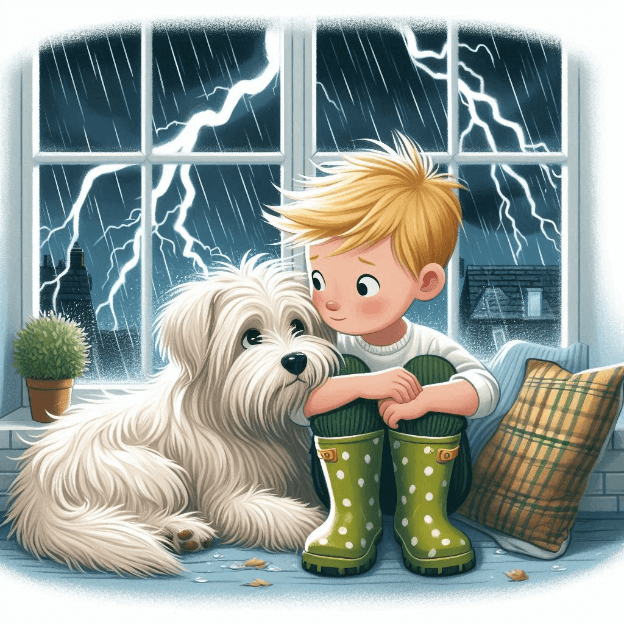
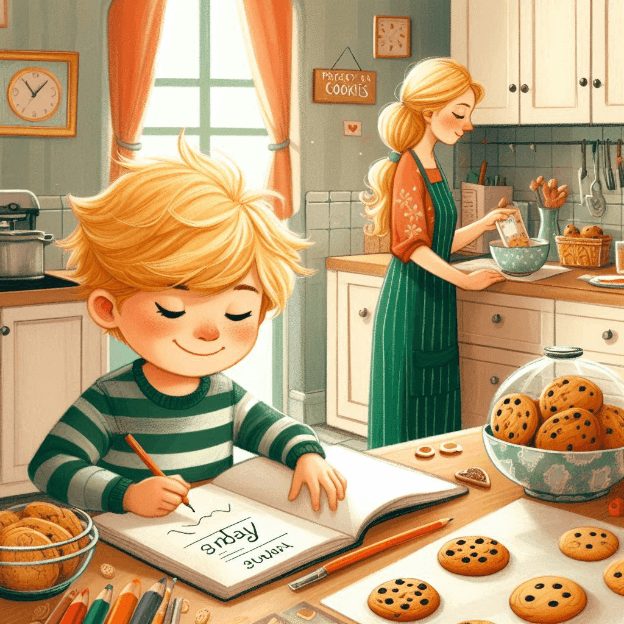
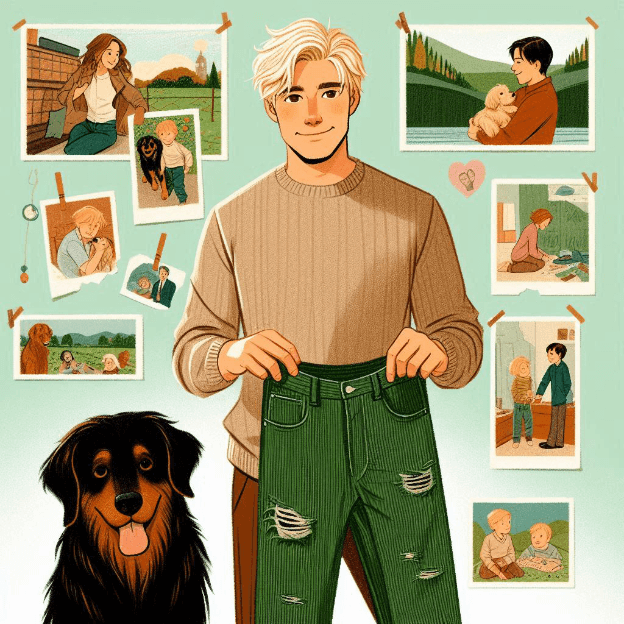
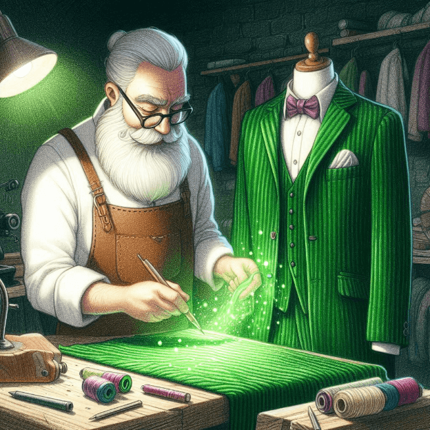

“Green Corduroy Day!”
by Mark Hakkarinen

(Illustration: Leo stands with his loyal dog, Buddy, beside him. Leo wears bright Green Corduroy Pants that shimmer with magic. His joyful face looks towards the sunrise, promising a new day. Buddy wags his tail, capturing their playful adventures. Around them, Leo's world unfolds with a quaint bakery, colorful houses, and towering trees.)
1
In a quiet town nestled among rolling hills, there lived a cheerful boy named Leo. One special day, his grandmother gave him a pair of pants unlike any other. They were bright green and made of soft, snug corduroy. Leo loved them immediately and called them his Green Corduroy Pants. His grandmother told him they were made with love and a touch of magic to bring comfort and joy.

(Illustration: Leo receiving the Green Corduroy Pants from his grandmother, both smiling warmly.)
2
Leo didn’t wear his Green Corduroy Pants every day. Instead, he saved them for times when he needed a little extra happiness and magic. These special pants turned ordinary days into Green Corduroy Days—a time when Leo would say, "It's a Green Corduroy Day!" and feel wrapped in a comforting embrace, ready to face whatever came his way.

(Illustration: Leo looking at his pants with a thoughtful expression, imagining all the good times he’s had wearing them.)
3
One sunny Monday, Leo woke up with a frown. His best friend, Mia, was moving away, and he felt a lump in his throat. As he got dressed, he saw his Green Corduroy Pants and decided to wear them. When he slipped them on, they felt like a warm hug. Suddenly, Leo felt a bit braver about saying goodbye to Mia.
(Illustration: Leo wearing his Green Corduroy Pants, standing next to Mia, both looking a bit sad but brave as they say goodbye.)
4
On Tuesday, a storm raged outside. Leo felt uneasy, but his dog, Buddy, curled up next to him, seeking comfort. Leo reached for his Green Corduroy Pants and put them on. As he did, he noticed Buddy looking at him with curious eyes. Leo whispered to Buddy that everything would be okay, feeling brave and ready to face the storm together. He felt so much better that he spent the evening playing with Buddy and forgot to study for his math test.

(Illustration: Leo sitting by a window with rain pouring outside, wearing his Green Corduroy Pants and comforting Buddy, who is lying next to him.)
5
Wednesday brought the big math test. Leo realized he hadn’t studied enough and felt butterflies in his stomach. After putting on his Green Corduroy Pants, Leo glanced at himself in the mirror. He straightened his posture and looked into his own eyes, finding courage and determination reflected back at him. Even though he wasn’t fully prepared, he knew he could do his best.

(Illustration: Leo looking at himself in the mirror with a determined expression after putting on his green pants.)
6
Thursday brought unexpected surprises. Leo woke to sunlight flooding his room, filling him with excitement. Donning his Green Corduroy Pants, he and Buddy ventured deep into the woods behind their house. They discovered a hidden trail leading to a sparkling creek, where ducks swam gracefully. Leo felt like an explorer uncovering a secret world. As they headed home, he realized Green Corduroy Days were about more than comfort; they were about discovering unexpected adventures and creating cherished memories.

(Illustration: Leo and Buddy exploring the sunlit forest with towering trees and a sparkling creek in the background. Leo wears his Green Corduroy Pants, and Buddy happily explores beside him.)
7
Friday was a big day for Leo's soccer team. His friend Mia, who used to be the goalie, was moving away soon, and Leo was feeling nervous about taking her place. He put on his Green Corduroy Pants and felt a wave of courage wash over him. At the game, he stood tall in the goal, ready to do his best. With each save, he heard his teammates cheering him on, and he knew Mia would be proud of him for stepping up. Even though they didn’t win, Leo felt proud of how hard he tried and how much his team supported each other.

(Illustration: Leo in his Green Corduroy Pants, standing in front of the goal with a determined look, while his teammates cheer him on from the field.)
8
On Saturday, Leo went to the park with his family and Buddy. As they climbed trees and played on the swings, Leo wore his Green Corduroy Pants, feeling the warmth of the sun on his face. Suddenly, he heard a familiar voice calling his name. It was Mia! Leo's heart leaped with joy and sadness as Mia ran over to him, her eyes shining with tears. They hugged tightly, knowing this was their last goodbye before she moved away. Leo felt grateful for the Green Corduroy Pants that gave him courage to face moments like this. Together, they laughed, shared stories, and promised to always remember their adventures together.

(Illustration: Leo and Mia hugging at the park, surrounded by their friends, family, and Buddy. Leo wears his Green Corduroy Pants, and Mia holds his hand with a bittersweet smile.)
9
Sunday was a day to relax. Leo spent time drawing, reading, and baking cookies with his mom. The sweet smell of cookies filled the kitchen, making the day feel even more special. Leo felt comfort and joy not just from his Green Corduroy Pants but also from the love and support of his family. His mom's cookies reminded him of the warmth of home, and he knew that no matter what happened, his family was always there for him.

(Illustration: Leo drawing, reading, and baking cookies with his mom in a cozy kitchen. The aroma of cookies fills the air, creating a warm and inviting atmosphere.)
10
Leo learned that life had its ups and downs, but he didn’t always need to wear his Green Corduroy Pants to feel brave and happy. The pants had taught him that he could find comfort and strength within himself, and in the love and support of his family and friends.

(Illustration: Leo sitting peacefully with his dog Buddy beside him, feeling strong and happy. He is not wearing his Green Corduroy Pants, which are folded nearby.)
11
But sometimes, when Leo wanted to make a day extra special, he would put on his Green Corduroy Pants. They turned an ordinary day into a Green Corduroy Day, filled with love, hope, and a touch of wonder.

(Illustration: Leo smiling with his Green Corduroy Pants in his hands, a magical glow around him.)
12
As Leo and Buddy grew older, Buddy preferred to nap by the fireplace instead of going on adventures. But Leo’s love for exploring never faded. To keep Buddy comfortable at home, Leo got another dog, Little Buddy, who had the same adventurous spirit. One day, while playing, Little Buddy chewed a hole in the Green Corduroy Pants. Leo was upset but knew they could be mended. Together, Leo and Little Buddy embarked on many new journeys, with the pants safely stored away for repair.

(Illustration: Leo as a grown-up with his older dog Buddy napping in a comfortable pet bed by the fireplace, and Little Buddy, a lively black and orange puppy, ready for adventures.)
13
As an adult, Leo still cherished his Green Corduroy Pants. They reminded him of all the adventures, laughter, and learning from his childhood. Whenever he looked at them, he thought of his grandmother and the love she had given him. Even though he didn't wear them anymore, Leo felt her presence in every stitch and happy memory. His Green Corduroy Pants were more than just clothes; they were a reminder that family love and courage could be found in the most unexpected places.

(Illustration: Leo as a grown-up with his black and orange dog, Little Buddy, holding the well-worn Green Corduroy Pants with a nostalgic smile, surrounded by memories of his childhood adventures.)
14
One day, Leo decided to do something special with his old and worn-out Green Corduroy Pants. He took them to a tailor and asked if they could be transformed into a three-piece suit. The tailor, with a twinkle in his eye, smiled warmly and said, "I love this idea! Let's make it happen." Leo's heart raced with excitement as he realized his dream was coming true.

(Illustration: Leo at the tailor shop, handing over the Green Corduroy Pants to a smiling tailor who is sketching out the design for the three-piece suit.)
15
The tailor worked diligently, paying attention to every detail. When the suit was finally ready the next week, it was a masterpiece. The new green corduroy fabric was soft and had a deep, vibrant color, and the suit fit perfectly, with beautifully crafted seams and elegant lines. As a kind gesture, the tailor also mended the original Green Corduroy Pants to look as good as new and carefully placed them in a gift box, ready to be handed down to Leo's child in the future.

(Illustration: The tailor meticulously crafting the new green corduroy suit, the deep, vibrant fabric glowing under the workshop light.)
16
Leo loved his new green corduroy suit. It made him feel connected to his past and his grandmother’s love. Whenever he wore it, he felt brave and happy, just like when he wore his Green Corduroy Pants as a kid. As Leo's own child grew older, he handed down the original Green Corduroy Pants, mended and carefully preserved, sharing with them the same comfort and magic he had felt as a child. Leo smiled joyfully and said, “Every day can be a Green Corduroy Day!”

(Illustration: In a quiet town nestled among rolling hills, Leo is wearing a handsome three-piece suit made of green corduroy, holding hands with his son who wears Green Corduroy Pants. His wife holds their child's other hand, and they all smile warmly. Their faithful dog, Little Buddy, happily plays nearby, adding to the sense of warmth and joy in the air.)